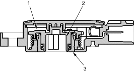
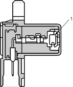
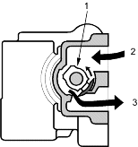

Throttle Position (TP) Sensor
The TP sensor is a potentiometer connected to the throttle valve shaft. As the throttle position changes, the sensor varies the signal voltage to the ECM/PCM. The TP sensor is not replaceable apart from the throttle body.

- ELEMENT
- BRUSH HOLDER
- BRUSH
Top Dead Centre (TDC) Sensor
The TDC sensor detects the position of the No. 1 cylinder as a reference for sequential fuel injection to each cylinder.

- MAGNET
Vehicle Speed Sensor (VSS)
The VSS is driven by the differential. It generates a pulsed signal from an input of 5 volts. The number of pulses per minute increases/decreases with the speed of the vehicle.
Idle Control System
When the engine is cold, the A/C compressor is on, the transmission is in gear, the brake pedal is pressed, the power steering load is high, or the alternator is charging, the ECM/PCM controls current to the Idle Air Control (IAC) valve to maintain the correct idle speed. Refer to the System Diagram to see the functional layout of the system.
Brake Pedal Position Switch
The brake pedal position switch signals the ECM/PCM when the brake pedal is pressed.
Electrical Power Steering (EPS) Signal
The EPS signals the ECM/PCM when the power steering load is high.
Idle Air Control (IAC) Valve
To maintain the proper idle speed, the IAC valve changes the amount of air bypassing the throttle body in response to an electrical signal from the ECM/PCM.

- VALVE
- From AIR CLEANER
- To INTAKE MANIFOLD
Power Steering Pressure (PSP) Switch
The PSP switch signals the ECM/PCM when the power steering load is high.